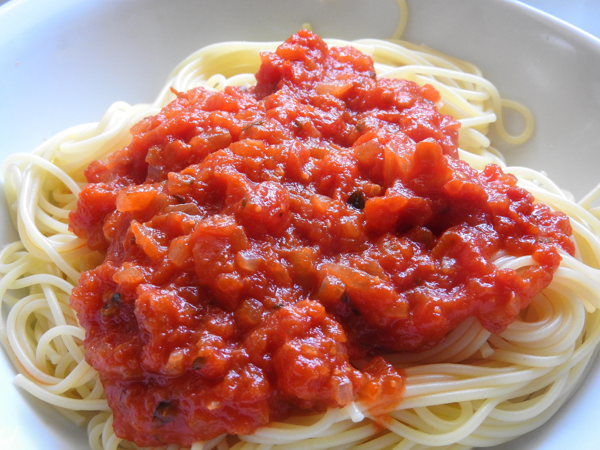

PRATO PRINCIPAL
Massa ao molho de tomate
Uma massa rápida e saborosa para qualquer ocasião.

- Tempo
- 30 minutos
- Porções
- 4
- Dificuldade
- Fácil
Ingredientes
- 400 g de massa
- 5 tomates maduros
- 2 dentes de alho
- 1 cebola pequena
- 2 colheres de azeite
- Sal a gosto
- Manjericão a gosto
Modo de preparo
- Cozinhe a massa conforme as instruções da embalagem.
- Pique os tomates, o alho e a cebola.
- Aqueça o azeite em uma panela.
- Refogue a cebola e o alho.
- Adicione os tomates e cozinhe até formar o molho.
- Acerte o sal e acrescente o manjericão.
- Misture o molho à massa e sirva.